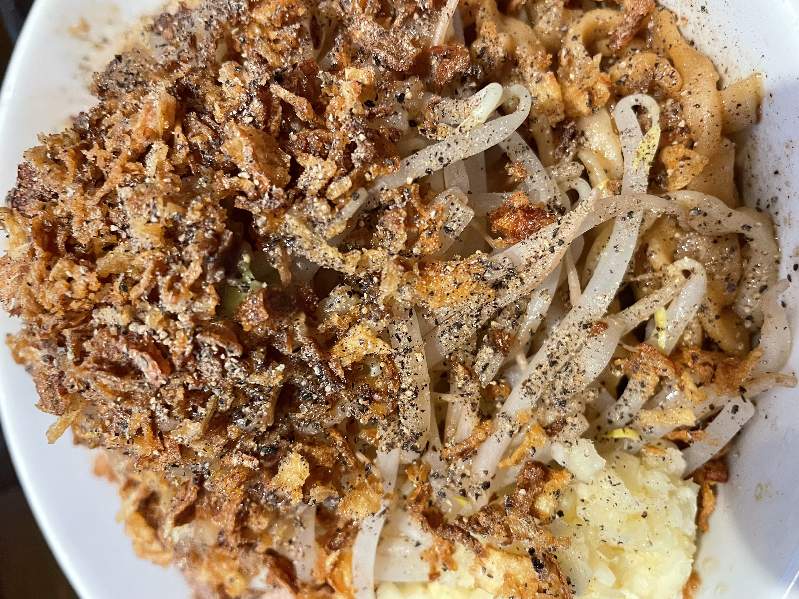
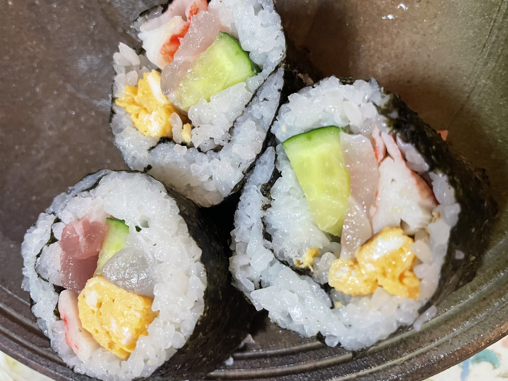

【Premium Comment（Billing）】
26/4/19（投稿日）TERUO＠teruo
I ate Taiwan ramen at Sichuan Lou (Nagoya City) on 4/18—or rather, I always eat it—and it’s really good.
I’ve completely stopped going to Misen. And it’s cheap. For lunch, it’s 780 yen with a set of twice-cooked pork rice. With fried rice, it’s 750 yen. And both are over 4.0.
Basically, when I eat out, there are a lot of 3.0 “normal” or 3.5 “pretty good” meals, but they don’t reach 4.0 “I want to eat this again.”
That’s the core system of Yummy. The wall at 3.5. In other words, is it just tasty, or does it actually make you want to eat it again? That’s the key.
【Premium Comment（Billing）】
26/4/11（Posted）TERUO＠teruo
I had doria at Cocos on 4/9 (2026), and yeah, it’s really good.
There’s a theory it’s the best thing at Cocos. It’s seriously solid.
The mini doria at Cocos (around 600 yen) is something you should try.
I wonder if there’s anything at Cocos that’s better. If there is, I’d like to know.
I also want to try making doria at home.
When I eat it, it makes me feel happy.
【Premium Comment（Billing）】
26/3/28（posted）TERUO＠teruo
The one below is the comment I posted on 3/27 about Rekishi wo Kizame, but man, it was seriously good. It might have even deserved a 4.5.
I want to go again. The abura-soba (no broth) was insanely good.
For my first try, I ordered the no-broth version instead of the regular ramen, and that was definitely the right choice.
The reason I chose it was because I heard the no-broth version is better than the one with soup.
Man, it was so good. I think adding extra fat (abura-mashi) was the right move.
While I was eating, I thought maybe I didn’t need the extra fat, but in the end, yeah—abura-mashi was the way to go.
It’s been a really long time since I had Jiro-style ramen, but this might already be my top one.
I wonder if there’s any Jiro-style place that can beat this.
I’m going to try more Jiro-style spots from now on.
I went to Ramen Dai a long time ago, so I don’t really remember it—so I’ll go there first.
I’m also curious about Butayama, so I’ll try that, and other pork-heavy spots too, and maybe Yume wo Katare as well.
There are a lot of places I want to check out.
But honestly, beating the no-broth 300g noodles with garlic and extra fat at Rekishi wo Kizame (Yagoto) seems really difficult.
That’s how good it was.
Jiro-style ramen is impressive.
There’s a theory that 300g noodles might be the best amount.
While eating, I thought I messed up, but in hindsight, maybe it was the right choice.
Also, I ate way too fast.
I could’ve taken my time a bit more.
Yeah, I definitely ate too quickly.
Anyway, it was delicious.
-------------------------------
26/3/27（posted）TERUO＠teruo
I came to a Jiro-style ramen shop for the first time in a long while.
I had the no-broth version, 300g noodles, with garlic and extra fat. It was delicious. It was also my first time at Rekishi wo Kizame.
Halfway through the 300g noodles, I honestly thought I made a mistake. I felt like 200g would’ve been better.
But after finishing and waiting a bit, I started to think maybe 200g wouldn’t have been enough.
So 300g might’ve been the right choice, but also maybe a bit too much.
If it’s your first time at Rekishi wo Kizame, I think 200g is fine.
Even though it was my first time, I chose the no-broth version.
I’ve never had the soup version, so I’m curious about that too.
Also, here’s how the operation works:
7654321
7654321
7654321
You line up in 3 rows.
Each row can have up to 7 people.
When the staff calls you, each person from the front to the back of one row enters the shop one by one, buys a ticket, and then returns to their original spot in line.
It was delicious. I want to go again.
It’s been a long time since I had Jiro-style ramen—it really packs a punch.
I chose extra fat, but garlic only with everything else normal would’ve been fine too.
Having an egg makes it easier to finish (you dip the noodles into the egg).
It felt like experiencing the “Rekishi wo Kizame” attraction.
It’s entertainment lol
■No-broth ramen (300g noodles, garlic, extra fat, egg)
⇒★★★★
4.0
■Rekishi wo Kizame (Yagoto Branch)
■Nagoya City
■1150 yen
■Ate day：26/3/27

（Photo taken by myself）
【Premiun Commnet（Billing）】
26/2/4（Posted）TERUO＠teruo
The ehomaki I ate (that was made for me) yesterday on 26/2/3 was way too good. Seriously, way too good.
That’s definitely a 4.0: “It breaks through the high wall of being just ‘normally good’—I want to eat it again.”
Apparently, if you buy one outside, it costs around 900 yen per roll. That’s way too expensive!!
If you buy the ingredients and make it at home, it’s insanely cheap.
This feels just like how Steve Wozniak said (I think he mentioned this in a book) that building a computer himself cost about $200,
but when Apple sold the Apple I, it was priced at $500.
※Though maybe it wasn’t specifically the Apple I story, but a basic computer—and the numbers might be off too lol.
It’s also the same as how Michael Dell realized that assembling computers himself and selling them would be cheaper, and turned that into a business.
I guess that’s just how the world works.
When you make things yourself, you can do it cheaper. That’s what crossed my mind.
For now, without overthinking things, I just want to be able to make ehomaki and feel happy!!
Actually, I *will* feel happy!!
By the way, this time I helped make it too—like, about one hundred-millionth of it lol.

【Premium Comment (Billing)】
26/1/4 (Posted) TERUO @teruo
Yeah--------!! The okonomiyaki I ate yesterday, 26/1/3, at Nanjamonja (Nagoya City, near Shiogamaguchi Station) was insanely good—so good that even a full day later, I’m still moved by it.
One of the reasons I created Yummy is because I truly believe that *what* you eat and *how* you eat it are absolutely essential to how delicious something becomes. When you put spicy sauce and mayonnaise on the deluxe okonomiyaki, it brings out every single aspect of its deliciousness.
Honestly, I kind of feel like it could’ve been a 5.0. I can’t help but think that, haha. It was really, truly amazing. Man… the best. This is what you call being moved.
Okonomiyaki
【Premium Comment (Billing)】
26/1/3 (Posted) TERUO @teruo
I had doria at Cocos on 1/2 (2026), and yeah—it's seriously good.
If you look at the doria section below, you can tell how different the photos of Cocos’ doria are between 12/2/25 and 1/2/26 lol.
It’s probably the amount of sauce. Even so, I honestly think Cocos’ doria is insanely delicious.
I really wish they’d just give us the recipe.
I want to make it at home.
At this point, I’m basically a Cocos master lol.
But hey—more masters, step up!!
Doria
【Premium Comment (Billing)】
26/1/2 (Posted) TERUO @teruo
I didn’t buy it myself, and I didn’t cook anything either, but the seafood bowl I ate on 1/1 and 1/2 was really good.
It was made by putting sashimi—octopus, salmon, sea bream, bonito, etc.—bought from Lopia (the supermarket run by Katopan’s husband) on vinegared rice.
For some reason, it felt tastier than sashimi from an ordinary supermarket.
I once heard from a high school student who works part-time at Lopia that their fish is good, and yeah… that was legit.
If I remember correctly, Lopia originally started as a butcher shop, so I’d heard rumors that their meat is good—but honestly, their sashimi is great too.
It’s a supermarket that really makes you curious.